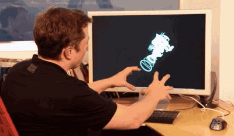
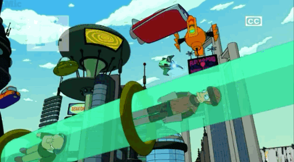
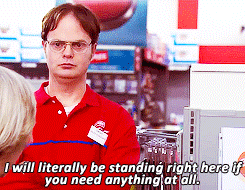

In recent years, Elon Musk has solidified his legacy as one of the most prominent entrepreneurs of our time. Ever since he rose to prominence in the midst of PayPal's online payments innovation, he wasted no time putting his hands to the grindstone to launch into more daring startup ventures.
2002 would see Musk form SpaceX, a company that would later work closely with NASA to take astronauts to the international space station. The following year, Musk would create Tesla Motors, a company that would later create the first all electric car, the Model S Saloon. From the beginning, Musk's projects seemed impossible and unrealistic, but they became successful anyway.
The story of Elon Musk continues to inspire entrepreneurs around the globe. A man who's mission in life has been to shake up the status quo and to strike first in untapped industries. There's a lot young entrepreneurs can learn from Elon Musk and his attitude towards innovation. Below we look at the top 5 business lessons young entrepreneurs can learn from Elon Musk.
1. Solve Problems Rather Than Spend Money
One of the main take homes from Musk's journey as an entrepreneur is that the free market rewards those who solve problems. The most productive, and profitable businesses focus on their products and services rather than simply chasing profitability.

Elon Musk's AI Proyect
The success of Tesla Motor's has occurred because electric cars solve the problem of limited fossil fuel supplies. Musk capitalized on the desire to have more sustainable, and less fuel intensive transportation. By paying attention to what the market wanted, as opposed to simply raise profits, Musk found an untapped business opportunity.
Young entrepreneurs who pay attention to what problems need to be solved will be much more successful than those who simply chase profitability. Chasing profitability is a shortsighted strategy as profitability is obtained through solving problems. Musk asked himself, What are some of the other problems that are likely to most affect the future of humanity?, and then attempted to answer those problems. By solving a problem first, he guaranteed profitability as a close second.
2. Be Innovative
Part of Musk's success has come as a result of his capacity to be innovative and shake up the status quo. Musk's ventures have always been characterized by their innovation, creating new products and moving into new industries that weren't saturated with competition. In taking the bold first step on projects like Tesla Motors electric cars, Musk differentiated himself from the crowd as a trendsetter. The autonomous cars of Tesla were incomparable to anything else on the market. Likewise, PayPal's secure online transaction system was unprecedented upon it's release.

The Future
In order to be successful, young entrepreneurs must ensure that they have something unique to offer. Of course it's important to proceed with caution (some business ideas don't have any competition for a reason!), but if you do your market research and come up with a unique offering, the more you will stand out from the crowd.
3. Never Lose Sight Of Your Customers
Since day one, Musk has prioritized the treatment of his customers. At the heart of his business values, there is a clear commitment to customer satisfaction.
In one interview, Musk notes that he likes to keep businesses processes simple, stating "We don't want to have three or four times as many delivery centers". How do we make that process more streamlined, less paperwork, less bureaucracy and get people ahead of time with really well-produced instructional videos for how to use their car?. By keeping business processes simple and cutting out bureaucracy, he improved the experience of his customers and enabled them to get "ahead of time".

Costumer Service
Likewise, as an entrepreneur, you should never overlook or make assumptions about what your customers want. Taking an active role in researching what customers want from your product, whether by conducting user research and requirement gathering or reading about market trends.
Musk embraced the trend of autonomy and interactivity with Tesla Motors by adding an autopilot option. By putting your customers at the forefront of your business vision you will ensure that you provide them with a high quality experience, which will make them consider you in future.
4. Absorb As Much Criticism And Feedback As You Can
An inevitable part of any businesses journey is accepting criticism and feedback. Throughout his time as an entrepreneur, Musk has been willing to endlessly critique his own work. Musk suggests that "you should take the approach that you're wrong" and that, your goal is to be less wrong. Rather than being driven by his ego Musk was prepared to criticize his work, and listen to the criticism of others in order to improve his businesses.
Criticism is a valuable opportunity to improve your service. Young entrepreneurs would do well to take a page out of Musk's book and absorb as much criticism as possible, as early as possible in order to improve their businesses.
Criticism
If you admit that a business process or service could be better, than you are able to implement a strategy to improve your weak spots. Entrepreneurs who are averse to criticism, or avoid taking a critical outlook on their businesses run the risk of becoming stagnant. For Musk, criticism has been the driving force of the refinement of his businesses.
5. Don't Be Afraid To Fail
Sometimes, even with all the preparation in the world, you fail an endeavor. Even Musk has failed a business venture before. In fact, he suggests, that if you aren't failing, then you aren't being innovative enough. Musk has failed two rocket launches to date, which lost around $60 million in total! Despite this major setback, he persisted and committed himself to make one more attempt at a successful launch. It was then that SpaceX launched a $6 billion contract with NASA.
Robot Goalkeeper
This serves as a reminder to entrepreneurs around the world that failure is a fact of life. Sometimes, even when you have the perfect idea and perform at your best you come up short. This doesn't mean that you should be hesitant to start your business, but that you should accept that failure is part of the free market. Whenever you start a new venture be prepared in the event of failure.